|
|
| Skitter Tutorial #2 - Adding
Lights & Sounds! |
Contents of this website are freeware and/or copyrighted material, and may not be sold
under any circumstances.
Email: dogsbody@dogsbodynet.com
Home:
https://dogsbodynet.com
|
Adding Lights & Sounds!
The first tutorial introduced
AIBO motion files (making AIBO move). Motion by itself is
ok, but AIBO is more expressive when lights & sound are
used. Even little things make a big difference.
This tutorial shows some basic steps for enhancing AIBO
skits.
Our goals are:
Let's get started!
|
| 1.0
Open AIBO Performance |
(1)
|
 If
Skitter is already running, open the performance you created in the
first tutorial. If
Skitter is already running, open the performance you created in the
first tutorial.
Otherwise, open your "action directory" in Windows Explorer.
Assuming Windows got configured as described in the first tutorial, double click on "firstwave.aib"
(or whatever filename you used).
Skitter starts & opens the skit.
If not, start
Skitter manually & open the skit.
|
|
|
(2)
|
Skitter now displays the
Motion, LED (lights), and MIDI (sound) editors for action "firstwave":
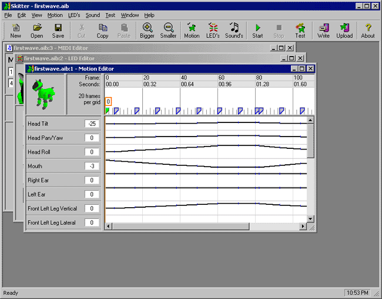 |
|
|
|
2.0
Editing AIBO Light/LED's
|
(1)
|
First, let's focus on the LED
editor. Click on the toolbar "LED"
button twice. The first click brings the LED editor to the
foreground. The second fills the Skitter window (see
below). If you keep clicking, the LED editor keeps toggling
between the normal & filled views.
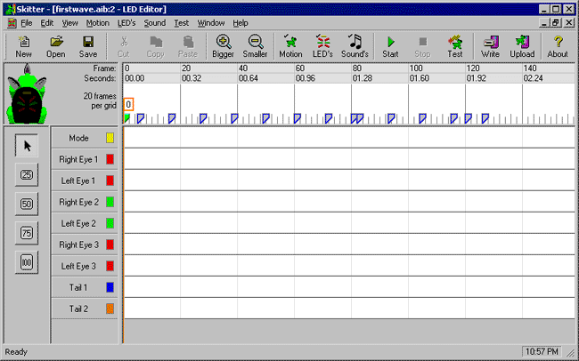
Down the left side are editing controls, and the list of AIBO's lights.
Below the toolbar, is an AIBO LED preview (non-movable), and the
same timeline/ruler-bar from the motion editor.
For reference, the blue keyframe tabs are visible in the timeline --
however, they cannot be changed here. Only the motion
editor can affect keyframes.
|
|
|
(2)
|
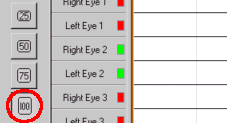Let's
dig in. It doesn't require much to make useful light
patterns. AIBO lights are illuminated by LED's
(light-emitting-diodes). Some
lights have multiple LED's, such as the 210 tail, or 310
horn.
First, select LED brightness. Click the "100"
button -- for maximum brightness.
|
|
|
(3)
|
Now at around time
8, click those LED's that make AIBO seem "happy".
Some AIBO's only have one, others several.
- ERS-110 owners, click "Happy Eyes".
- ERS-210 owners, click "Right Eye 2", "Left
Eye 2", and "Tail Blue".
- ERS-220 owners, click "Right Eye 2", "Left
Eye 2", "Left Tail" and "Right Tail".
- ERS-310 owners, click "Horn Blue".
- ERS-7 owners, click "Happy Right 1", "Happy
Right 2", "Happy Left 1", and "Happy Left 2".
|
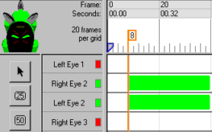 |
|
|
(4)
|
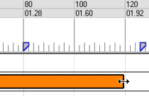Next,
we need to stretch those LED color-bar's. Click the
middle of a color bar (doesn't matter which).
It turns orange, meaning its selected.
Move the mouse to the right edge of the highlight, until it changes
into a resizing cursor. Click-n-drag the edge to time 120.
Repeat for each LED turned on in Step (3).
|
|
|
(5)
|
The LED file is
now finished, and the editor should resemble the image
below. Click the
toolbar "Save" button to save it!
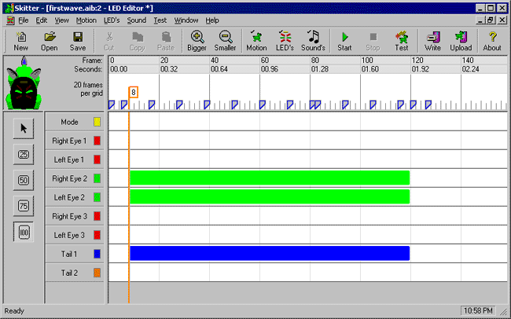
|
|
|
|
(1)
|
The Skitter MIDI sound editor is similar
to the LED editor. To display the MIDI editor, click the
toolbar "Sound" button.
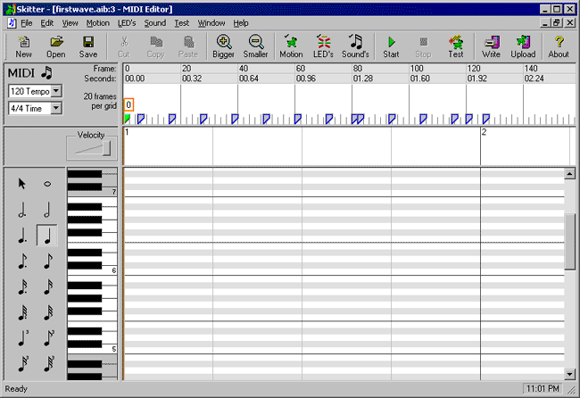
Down the left side are editing controls, and the piano-bar.
Below the toolbar is the timeline/ruler-bar from the
motion editor again. Between
the timeline & score-sheet is the velocity (or volume)
bar. Musical notes have volume which is adjusted
there.
|
|
|
(2)
|
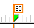The sound we need to finish up this
performance is very simple. First, click on the blue
keyframe tab at time "60" (it changes green once selected). |
|
|
(3)
|
 Second,
we must select a note duration (how long notes are played for).
Click on the eighth-note button. New notes added to the
score-sheet, will be approximately 1/4 second. Second,
we must select a note duration (how long notes are played for).
Click on the eighth-note button. New notes added to the
score-sheet, will be approximately 1/4 second.
|
|
|
(4)
|
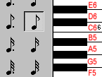Piano
keys are grouped into octaves. Seven white piano keys form an
octave, and are called "C-D-E-F-G-A-B". The letter refers
to the pitch. Numbers after the pitch, refer to the octave.
(ie: "C6" means pitch C, octave 6).
On the piano-bar, click B5, followed by A5
-- the two white keys below the small "6".
|
|
|
| (5)
|
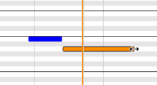The A5 note needs stretching a
little. This works exactly like the LED editor.
Select the A5 note to highlight it, then move the mouse to its right
edge (until the resizer cursor appears).
Click-n-drag until A5 is around twice the length.
|
|
|
(6)
|
Our simple sound file with two notes is
finished. The editor should resemble the image
below. Click the
toolbar "Save" button to save it!
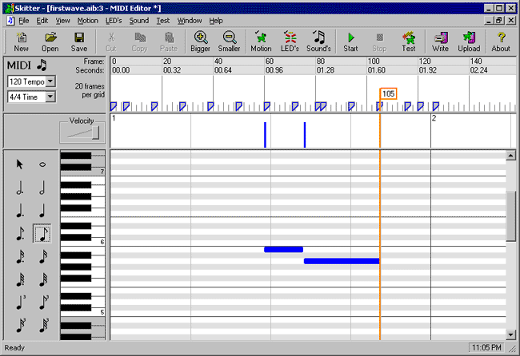
|
|
|
| (7) |
 Congratulations!
You've finished the second tutorial! Congratulations!
You've finished the second tutorial!
Open the AIBO Window (View menu ->
AIBO Window), and try out your new & improved
skit!
Adding some simple light & sound effects makes AIBO more
engaging. Instead of just waving, AIBO now seems happy
& says "hel-lo".
You've learned the basics. Now try
experimenting. If you make a mistake, use the Undo
feature (Edit Menu -> Undo).
Got a question? Ask Dogsbody!
Enjoy!
|
|
|
Legalese: These programs are provided AS IS without any warranty, expressed or implied.
This includes without limitation the fitfulness for a particular purpose or
application. People using the software bear all risk
as to its quality and performance. The user of the software
is responsible for any damages whether direct, indirect, special,
incidental or consequential arising from a failure of these programs to operate in
any manner desired. Etc, etc...
"AIBO" is a registered trademark of Sony Corporation.
"AIBO Master Studio", "R-Code", and "Memory Stick" are trademarks of Sony Corporation.
|
|